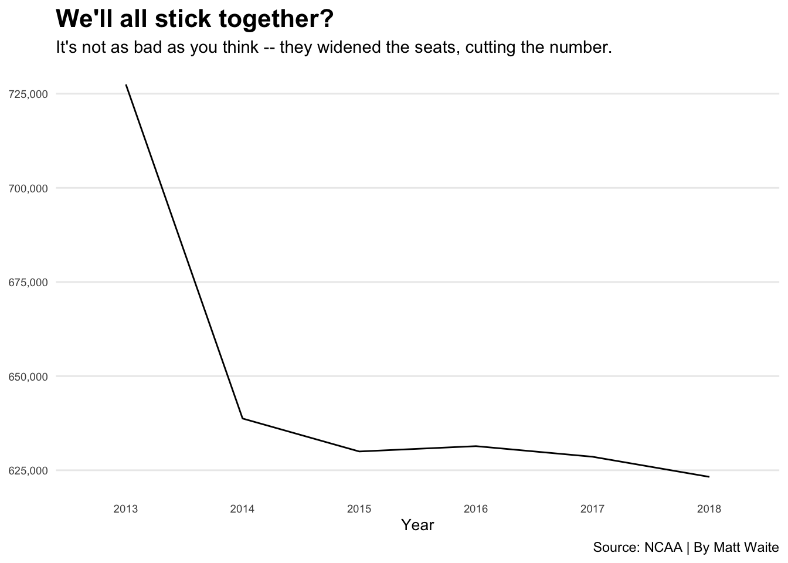

library(tidyverse)7 Transforming data
Sometimes long data needs to be wide, and sometimes wide data needs to be long. I’ll explain.
You are soon going to discover that long before you can visualize data, you need to have it in a form that the visualization library can deal with. One of the ways that isn’t immediately obvious is how your data is cast. Most of the data you will encounter will be wide – each row will represent a single entity with multiple measures for that entity. So think of states. Your row of your dataset could have the state name, population, average life expectancy and other demographic data.
But what if your visualization library needs one row for each measure? So state, data type and the data. Nebraska, Population, 1,929,000. That’s one row. Then the next row is Nebraska, Average Life Expectancy, 76. That’s the next row. That’s where recasting your data comes in.
We can use a library called tidyr to pivot_longer or pivot_wider the data, depending on what we need. We’ll use a dataset of college football attendance to demonstrate.
For this walkthrough:
First we need some libraries.
Now we’ll load the data.
attendance <- read_csv('data/attendance.csv')Rows: 150 Columns: 8
── Column specification ────────────────────────────────────────────────────────
Delimiter: ","
chr (2): Institution, Conference
dbl (6): 2013, 2014, 2015, 2016, 2017, 2018
ℹ Use `spec()` to retrieve the full column specification for this data.
ℹ Specify the column types or set `show_col_types = FALSE` to quiet this message.attendance# A tibble: 150 × 8
Institution Conference `2013` `2014` `2015` `2016` `2017` `2018`
<chr> <chr> <dbl> <dbl> <dbl> <dbl> <dbl> <dbl>
1 Air Force MWC 228562 168967 156158 177519 174924 166205
2 Akron MAC 107101 55019 108588 62021 117416 92575
3 Alabama SEC 710538 710736 707786 712747 712053 710931
4 Appalachian St. FBS Independent 149366 NA NA NA NA NA
5 Appalachian St. Sun Belt NA 138995 128755 156916 154722 131716
6 Arizona Pac-12 285713 354973 308355 338017 255791 318051
7 Arizona St. Pac-12 501509 343073 368985 286417 359660 291091
8 Arkansas SEC 431174 399124 471279 487067 442569 367748
9 Arkansas St. Sun Belt 149477 149163 138043 136200 119538 119001
10 Army West Point FBS Independent 169781 171310 185946 163267 185543 190156
# ℹ 140 more rowsSo as you can see, each row represents a school, and then each column represents a year. This is great for calculating the percent change – we can subtract a column from a column and divide by that column. But later, when we want to chart each school’s attendance over the years, we have to have each row be one team for one year. Nebraska in 2013, then Nebraska in 2014, and Nebraska in 2015 and so on.
To do that, we use pivot_longer because we’re making wide data long. Since all of the columns we want to make rows start with 20, we can use that in our cols directive. Then we give that column a name – Year – and the values for each year need a name too. Those are the attendance figure. We can see right away how this works.
attendance |> pivot_longer(cols = starts_with("20"), names_to = "Year", values_to = "Attendance")# A tibble: 900 × 4
Institution Conference Year Attendance
<chr> <chr> <chr> <dbl>
1 Air Force MWC 2013 228562
2 Air Force MWC 2014 168967
3 Air Force MWC 2015 156158
4 Air Force MWC 2016 177519
5 Air Force MWC 2017 174924
6 Air Force MWC 2018 166205
7 Akron MAC 2013 107101
8 Akron MAC 2014 55019
9 Akron MAC 2015 108588
10 Akron MAC 2016 62021
# ℹ 890 more rowsWe’ve gone from 150 rows to 900, but that’s expected when we have 6 years for each team.
7.1 Making long data wide
We can reverse this process using pivot_wider, which makes long data wide.
Why do any of this?
In some cases, you’re going to be given long data and you need to calculate some metric using two of the years – a percent change for instance. So you’ll need to make the data wide to do that. You might then have to re-lengthen the data now with the percent change. Some project require you to do all kinds of flexing like this. It just depends on the data.
So let’s take what we made above and turn it back into wide data.
longdata <- attendance |> pivot_longer(cols = starts_with("20"), names_to = "Year", values_to = "Attendance")
longdata# A tibble: 900 × 4
Institution Conference Year Attendance
<chr> <chr> <chr> <dbl>
1 Air Force MWC 2013 228562
2 Air Force MWC 2014 168967
3 Air Force MWC 2015 156158
4 Air Force MWC 2016 177519
5 Air Force MWC 2017 174924
6 Air Force MWC 2018 166205
7 Akron MAC 2013 107101
8 Akron MAC 2014 55019
9 Akron MAC 2015 108588
10 Akron MAC 2016 62021
# ℹ 890 more rowsTo pivot_wider, we just need to say where our column names are coming from – the Year – and where the data under it should come from – Attendance.
longdata |> pivot_wider(names_from = Year, values_from = Attendance)# A tibble: 150 × 8
Institution Conference `2013` `2014` `2015` `2016` `2017` `2018`
<chr> <chr> <dbl> <dbl> <dbl> <dbl> <dbl> <dbl>
1 Air Force MWC 228562 168967 156158 177519 174924 166205
2 Akron MAC 107101 55019 108588 62021 117416 92575
3 Alabama SEC 710538 710736 707786 712747 712053 710931
4 Appalachian St. FBS Independent 149366 NA NA NA NA NA
5 Appalachian St. Sun Belt NA 138995 128755 156916 154722 131716
6 Arizona Pac-12 285713 354973 308355 338017 255791 318051
7 Arizona St. Pac-12 501509 343073 368985 286417 359660 291091
8 Arkansas SEC 431174 399124 471279 487067 442569 367748
9 Arkansas St. Sun Belt 149477 149163 138043 136200 119538 119001
10 Army West Point FBS Independent 169781 171310 185946 163267 185543 190156
# ℹ 140 more rowsAnd just like that, we’re back.
7.2 Why this matters
This matters because certain visualization types need wide or long data. A significant hurdle you will face for the rest of the semester is getting the data in the right format for what you want to do.
So let me walk you through an example using this data.
Let’s look at Nebraska’s attendance over the time period. In order to do that, I need long data because that’s what the charting library, ggplot2, needs. You’re going to learn a lot more about ggplot later.
nebraska <- longdata |> filter(Institution == "Nebraska")Now that we have long data for just Nebraska, we can chart it.
ggplot(nebraska, aes(x=Year, y=Attendance, group=1)) +
geom_line() +
scale_y_continuous(labels = scales::comma) +
labs(x="Year", y="Attendance", title="We'll all stick together?", subtitle="It's not as bad as you think -- they widened the seats, cutting the number.", caption="Source: NCAA | By Matt Waite", color = "Outcome") +
theme_minimal() +
theme(
plot.title = element_text(size = 16, face = "bold"),
axis.title = element_text(size = 10),
axis.title.y = element_blank(),
axis.text = element_text(size = 7),
axis.ticks = element_blank(),
panel.grid.minor = element_blank(),
panel.grid.major.x = element_blank(),
legend.position="bottom"
)